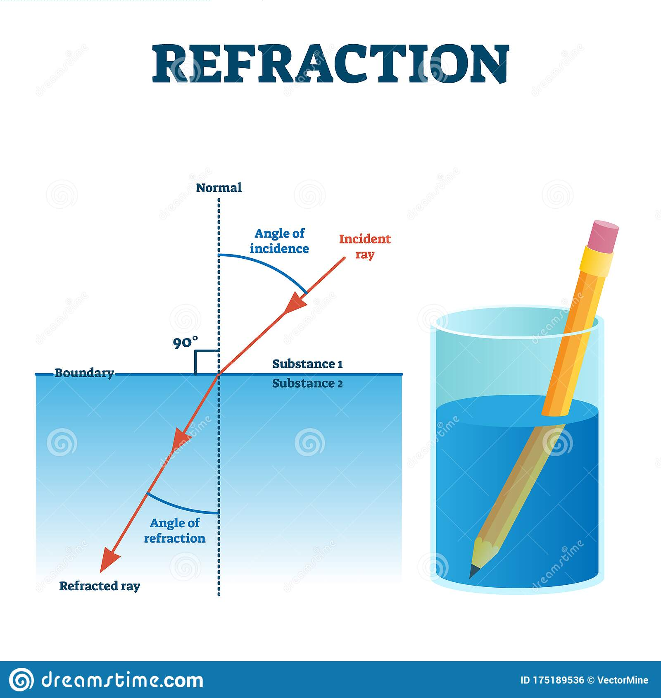

Ray Lines
Diagram from Cuemath.
The vector representation of a line can be:
\(λ \bar m\) + \(\bar s\) or \(λ \bar b\) + \(\bar a\)
where \(\bar b\), \(\bar m\) and \(\bar a\), \(\bar s\) are commonly used
interchangeably,
\(\bar s\) is the origin point of the ray, and \(\bar m\) is the angle of the ray.
The \(λ\) parameter specifies the distances along the line.
Finding the origin of the ray, \(\bar s\), can be any light source chosen, or often used
is the
camera position.
The line's angle \(\bar m\) is the ratio of how each coordinate changes from different
points on the
line.
Manipulating some incredible formulas that can be found here.
The equation for \(\bar m\) becomes:
\( \bar m^{\theta_p}_{\theta_y}\) = \(rot_x ( rot_y ( \begin{bmatrix} 0.1(p_x - 2)\\ 0.1(p_y - 2)\\ 1 \end{bmatrix} , \theta_y), \theta_p) \)
Now that both \(\bar m\) and \(\bar s\) have been found, any coordinates on the line can be calculated.
Intersection
Now that coordinates on the ray lines can be found, we can find the intersection, \(\bar i\), of a ray \(\bar r\) = \(λ \bar m\) + \(\bar s\) with a plane \(\bar p\) = {\(a, b, c, k\)}. For more information on planes, and creating objects with planes.

Diagram from Scott Logic.
Since \(\bar i\) is on both \(\bar r\) and \(\bar p\). It can be substituted directly into both equations. This becomes
\( \bar i\) = \(
\begin{bmatrix}
λ \bar m_x + \bar s_x\\
λ \bar m_y + \bar s_y\\
λ \bar m_z + \bar s_z
\end{bmatrix}
\)
\(a * \bar i_x + b * \bar i_y + c * \bar i_z + k\) = \(0\)
Combining the two equations above and isolating for \(λ\), examples and steps shown here
\(λ\) = \(- {[a, b, c] * \bar s + k} \over {[a, b, c] * \bar m}\)
\(λ\) can now be substituted into the original equation \(\bar i\) = \(λ \bar p\) + \(\bar s\) to calculate for \(\bar i\).
Reflection / Refraction
Reflection
Reflection is the simplest form of light-matter interaction. The most commonly used law is that the angle of incident, \(\theta_i\), is each to the angle of reflection, \(\theta_r\). They can be seen below.
Diagram from Byju's
Assuming the surface is normal (flat) and using the distance of the ray before intersection, \(I\), as previously calculated. We can use this alongside the vector that is perpendicular (right angle) to the surface, \(N\). After some math manipulation using the previous angles, the final equation is \(R = I - 2(N * 1)N\). Where \(R\) is the ray that is reflected. More information and steps can be found here.
Refraction
Refraction is when light is “bent” after contacting another transparent medium (air, glass, diamond, etc.). Every transparent medium has a different level of refraction, this is the reason why diamonds sparkle and water does not.
Image from dreamstime
The amount of refraction for each surface is called the index of refraction, \(η\). The
equation for
it is
\(η\) = \(c \over v\), where \(c\) is a constant for the speed of light, and \(v\) is
the speed of
light in this medium.
There is a list of predetermined values for many different mediums in our world. Using
the index of
refraction with
the angle of incident and many equation manipulations found
here.
The equation for the ray of refraction, \(T\), is
\(T = η(I + c_1 N) - Nc_2 \)
\(T = ηI + (η c_1 - c_2)N\)
where \(c_1\) is the speed of light in the first medium, \(c_2\) is the speed of light
in the second
medium,
and \(N\) is the perpendicular vector.
The rays can then continue throughout the scene reflecting and refracting until
perceived by the
camera or person.